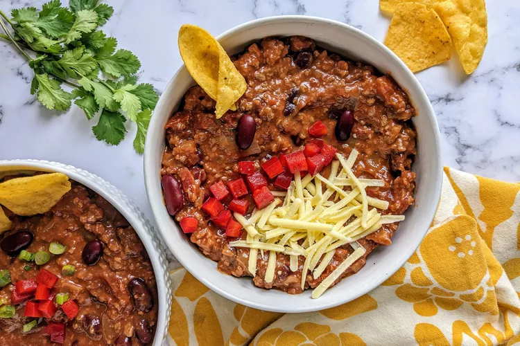

Easy Homemade Chili
Description
Homemade chili is delicious and goes great with cornbread or over corn chips for a chili pie! I like to use spicy pinto beans.
Ingredients
- Beef
- Onion
- Canned goods
- Spices
Steps
- Place ground beef and onion in a large saucepan over medium heat; cook and stir until meat is browned and onion is tender, about 5 to 7 minutes.
- Stir in tomato sauce, kidney beans, stewed tomatoes with juice, and water. Season with chili powder, garlic powder, salt, and black pepper. Bring to a boil, reduce heat to low, cover and let simmer for 15 minutes.